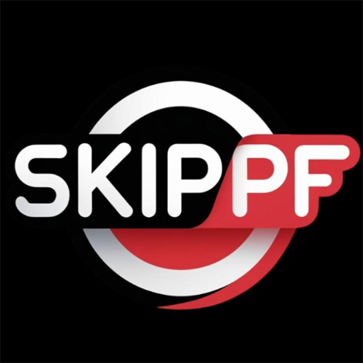

SKIPPF
CPF Pahang
Buka SKIPPF ➜
📱 Simpan di Skrin Utama (sekali sahaja)
Android (Chrome): Tekan menu ⋮ di atas kanan → "Tambah pada Skrin utama" → Tambah.
iPhone (Safari): Tekan butang Kongsi → "Add to Home Screen" → Add.
Selepas disimpan, tekan ikon SKIPPF di skrin utama untuk terus masuk.